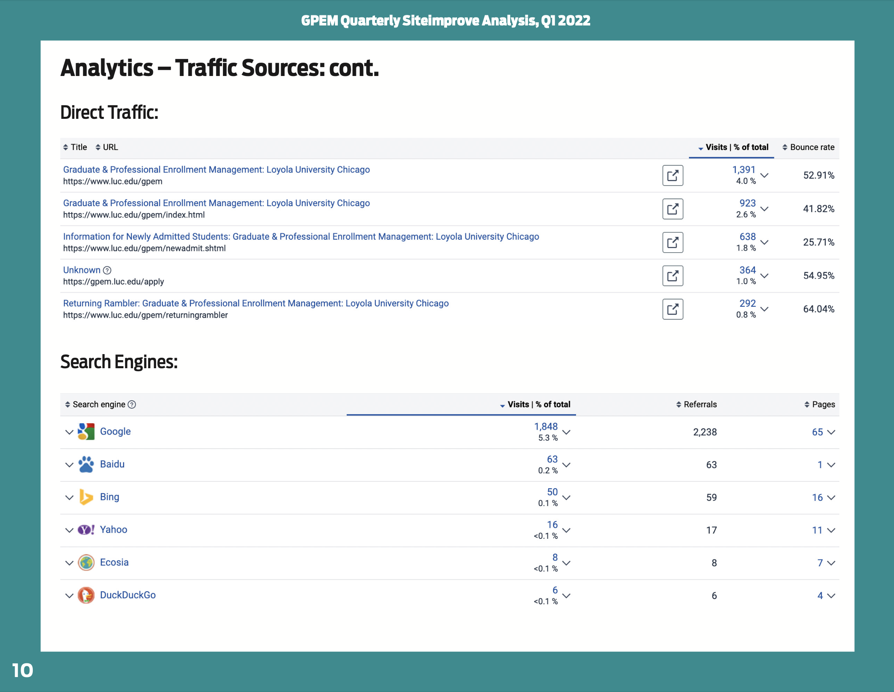
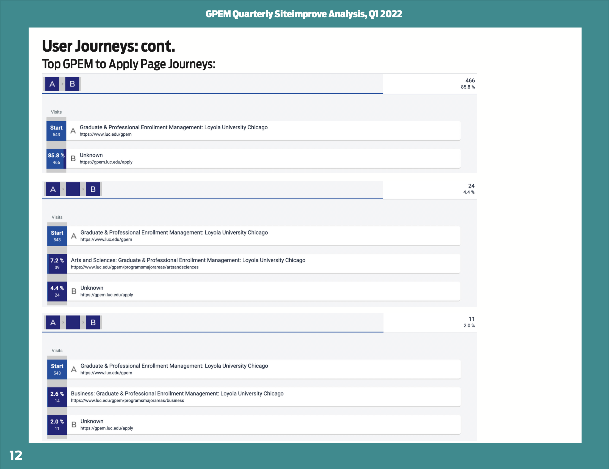
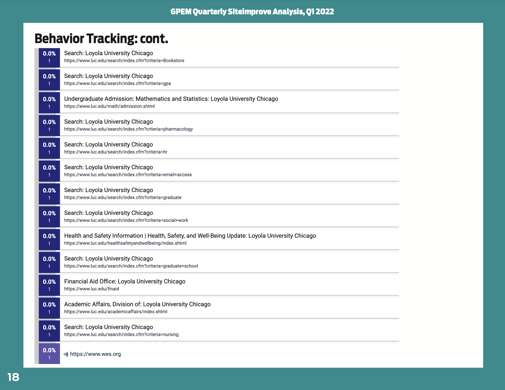
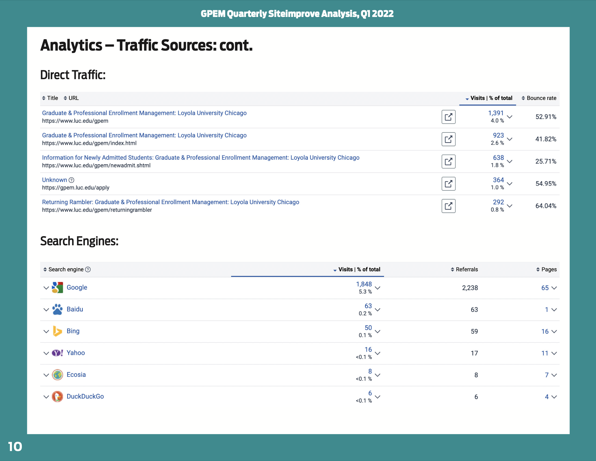
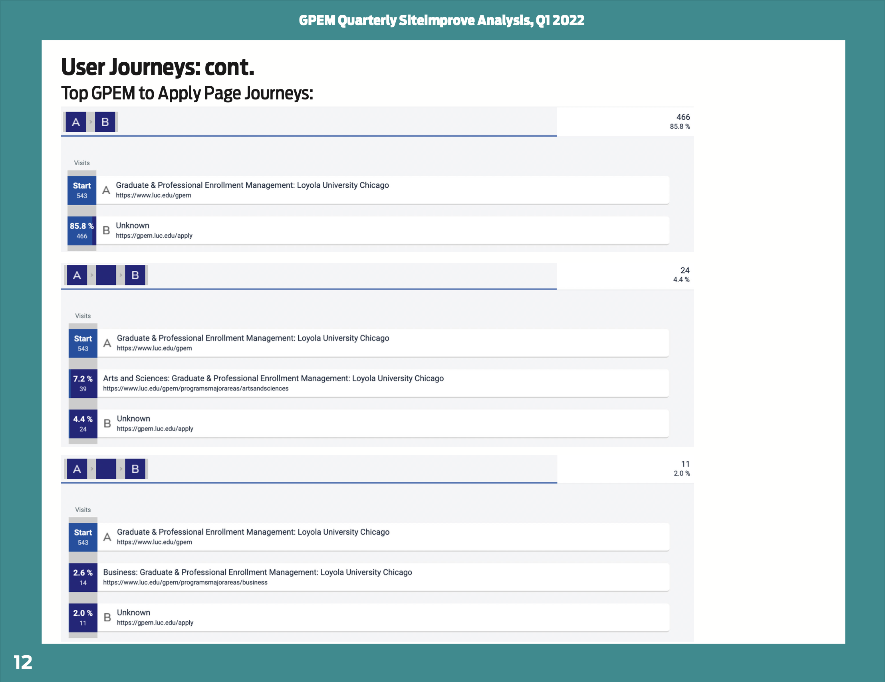
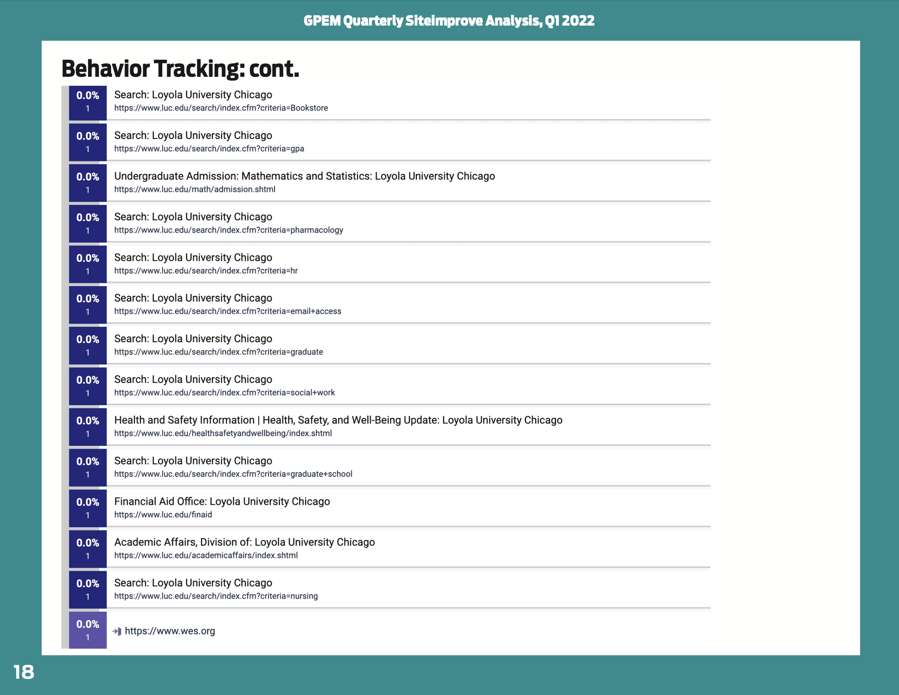

Overview
In this role, Nick worked as the Web Designer & Developer on the Digital Communications team for Graduate & Professional Enrollment Management (GPEM) at Loyola University Chicago. Nick and his team focused on three overarching goals to streamline GPEM’s online presence and admission process: single source information, refresh and recenter the GPEM digital experience and develop a new centralized recruitment website. Nick’s contribution to these three goals, along with example work, are explored below.
Timeline:
08/2021 – 06/2023
Tools:
Slate (CRM), Terminal4 (CMS), Siteimprove, Adobe Creative Suite
Skills:
HTML, CSS, JavaScript, Analytics, UI/UX, Graphic Design
Single Source
Single source refers to maintaining one, true data set on admission policies and active programs to provide the most accurate and current information to the admissions team and prospective students. Prior to Nick and the Digital Communications team being hired, the GPEM site housed outdated information, multiple pages with different versions of the same process, and program information which disagreed with the content on school websites. What began as a mission to reign in misinformation would turn into the structure of the new recruitment website. Nick's role in the process of moving towards single source focused on user experience of the GPEM website and application process, examples below.
- Decreased duplicate graduate and professional admission content scattered throughout Loyola’s many websites, linking those pages back to the GPEM site.
- Reviewed, updated and created content on the GPEM site to reflect official admission policies. Examples include updating post-admit content pages and creating new visitor policy and Returning Rambler pages.
- Employed Siteimprove analytics software to establish user patterns on the GPEM site, guiding which content was most pertinent for Nick and team to update first.
- The original GPEM site was mostly decentralized, relying heavily on linking to other school pages for program information. Siteimprove aided in conducting regular audits to maintain operational links, minimize 404s and increase our site reliability.
- Created quarterly reports on the progress of the site using Siteimprove data, reviewed by the Assistant VP of GPEM to track progress of the Digital Communications team.
- A quick background on Slate:
- The Assistant Director of Digital Communications shared the potential power of portals within Slate.
- The Slate CRM contains datasets of all current program and application information. This data would inspire the questions of “how far?” could the Digital Communications team take single sourcing.
- Merge fields*, content blocks** and liquid looping*** allowed the team to create dynamic portals based on the user, providing tailored information to them, rather than a static webpage with general information.
- * Merge fields pull the program/user data stored in Slate
- ** Content blocks are singular pieces of information which can be repeatedly used in portals and communication flows. Only need to be updated in one place to have the change reflected everywhere it's used.
- ***Liquid (looping) is the coding language used in Slate to interact with datasets
- First project using portals was the Post Admit Portal (PAP)
- Moving away from static web pages using generic school based content for admitted students, the PAP provided the user-specific content pulling information based on the program they applied for. Information the admitted student received was more personalized to create a smoother path from admitted to student.
- PAP was built dynamically using conditional logic to display content blocks and merge fields with program and user information. The backend only required one page per tab, creating a unique experience when a user logged on.
- Nick led web development on the PAP creating mockups of potential designs, built out the portal using HTML, CSS and JavaScript and used Loyola brand guidelines to ensure it felt like an extension of Loyola’s digital space.
- The success of implementing single sourced content into the Post Admit Portal would serve as a large part of Digital Communication’s case to use Slate over Loyola’s CMS for the new recruitment site.

Refresh & Recenter
The GPEM website, communication flow and Slate build files had not been updated since 2012 during the last full refresh of the Loyola digital space. As the first Web Designer on the GPEM team, a crucial part of Nick’s role was to modernize styling and refactor code to meet current day standards. Brand styling updates would be done based on Loyola brand guidelines and weave in styling pulled from finalized mockups of the new centralized recruitment site.
- Designed and developed unique open house and visit pages within the Terminal4 CMS on GPEM and school sites
- Expanded old GPEM site to increase functionality for users
-
Updated navigation bar to link important pages, previously none existed

- Improved design and content layout on pages used by post admit students (later replaced by Post Admit Portal - see Single Source > Within Slate)
- Created pages for the Returning Rambler scholarship and Visitor Policy (examples under Single Source > Initially

- Updated emails
- Refactored with modern coding standards
- Built email templates for Admission Advisors to easily pull and use in their communication flows
- Developed reusable components - allowing for easy modification to make unique email templates
- Created refreshed header banners for each school and GPEM using Adobe Illustrator
- Wrote documentation for Admission Advisors to reference when creating new emails, adding imagery, etc.
- Designed and developed micro-sites on employment opportunities post graduation for the Assistant VP of Enrollment Information and Analysis using his team’s data. The Graduate School: Humanities Report The Graduate School: Social Sciences Report Quinlan School of Business: MBA Report
- Refactored Slate build files to match final mockups of new recruitment website
- Existing styling in Slate was based on updates made in 2012
- Introduced modern responsive design, increasing the usable page width that would benefit upcoming projects - as seen on the Employment Opportunities pages and Post Admit Portal above.
- The goal for the overall styling was for the user to feel like they are always on the new recruitment website, even if they were in a separate portal. This choice was made to ensure the user knew that all of these different elements are part of the same department at Loyola. Contrasting the previous site which had mis-matched templates and relied on school sites.
- Managed the refresh of the Application Status portal
- In addition to design, focused on content displayed in the portal - this was an opportunity for Nick to realize he enjoyed strategizing how content would fit into a site to improve user experience.
- Collaborated with the Senior Associate Director of Enrollment and Associate Director of Operations on what was most crucial for an applicant to know about applying and what information was needed from them to provide a proper review of their application.
- Portal design references styling of the new recruitment site mockup
New Recruitment Site
The Digital Communications team became the lead on the new recruitment website project with their background in communications and web design and remained the driving force throughout its entirety. The old GPEM site lacked program search functionality, information on “Why Loyola” and alienated undecided prospective students, all of which the new recruitment site aimed to fix. Nick’s role included leading web design and working as the liaison between GPEM, Loyola’s University Marketing team and the vendor’s designers and developers. After switching hosting platforms and a rocky code handoff from our vendor, the Assistant Director of Digital Communications and Nick would go on to complete development of the site and launch the new Graduate & Professional Admissions Website.
- New site design didn’t need the frills of an undergrad website - grad and professional prospective students are interested in hard facts about programs and simple navigation
- The site would centralize all graduate and professional program pages, pulling them off of individual school sites.
- This furthered Digital Communciation’s goal of single sourcing and provided prospective students an easy way to view all available programs. Placing the programs under GPEM jurisdiction allowed for easy content maintenance and ensured equal levels of information were provided for each program.
- Faculty and school staff were encouraged to submit forms providing all necessary content during the content buildout. Post site completion, another form became accessible and could be filled out with content updates to their programs.
- Working with the external Vendor:
- The vendor’s deliverables consisted of information architecture, low/high-fidelity wireframes, site-wide copy and code framework.
- The GPEM team relied on Nick to consider website best practices, Loyola’s mission and branding guidelines when making final decisions on design presented by the vendor’s team.
- Nick presented the vendor’s mockups to internal stakeholders at Loyola, including the Assistant VP of Graduate and Professional Enrollment and Assistant VP of University Marketing and Communications, for feedback and final approval.
- The site was originally to be housed in the Terminal4 CMS; however, Digital Communications decided it was more important to maximize the potential of using single source data and moved to host the site in Slate.
- Building in Slate gave GPEM full governance of web development and styling that would have been limited in the CMS, which is managed by University Marketing.
- Using Slate also removed the need for a syncing process to pull information from Slate into Terminal4. Rather than an overnight, daily sync, updated information from the dataset would be immediately available on the site.
- Nick and the Assistant Director of Digital Communications developed a dynamically populating search and filter functionality, the Program Finder, for the website within Slate - originally an add-on feature that was to be built by the CMS vendor - saving GPEM $65,000.
- This search and filter can work together or separately based on user needs, a feature the CMS version would’ve lacked.
- They built the program finder with limited resources from Slate documentation and Slate Community Knowledge Base as such a task had never been undertaken by anyone on the platform. Program Finder
- The over 200+ program pages on the website are built dynamically using URL parameters in combination with liquid looping, content blocks and merge fields. This requires only one base page, similar to the Post Admit Portal, which can then call correlating information from the dataset based on the parameter, instantly building out a program page for the user - furthering our single source mission. The CMS would have required individual program pages with limited single sourcing.
- The vendor was aware of the hosting platform switch, yet provided a code framework built for the CMS, leaving Nick with extra work to update the code for Slate usage.
- Nick refactored the vendor's framework for all provided pages and broke down individual components needed to work for our Slate instance
- Vendor didn’t provide mockups of static pages (ex. Admission Process, Returning Rambler, etc). Nick created mockups and developed these pages using the refactored framework and components.
- After months (years really…) of tedious backend work, delirious code scribbles on paper and repeated testing, Nick and his team released the new recruitment website in May 2023, hosted in Slate. The Digital Communications team were the first users on the platform to achieve such a feat!
Beyond Web Design
Working on a small, brand new team required Nick to sometimes extend his responsibilities beyond Web Design. This provided him with an opportunity to explore different fields of work, become a manager and speak at a conference about the work the Digital Communications team accomplished.
- Created printed materials for Admissions Advisors to use for in-person events - using styling to match the new recruitment site
- Program name table-toppers
- QR code
- Nametags
- Illustrated the 2022 Holiday Card graphic and email sent from GPEM to all current and prospective students at the graduate and professional level.
- Before Nick received code from the external vendor, his team knew they would need an extra hand with adding content for 200+ program pages into our dataset. The Director of Digital Communications allocated funding for Nick to bring on a student worker through the end of the website project.
- The hiring process was handled by Nick: making the post on Handshake, sorting through applicants, creating a coding test, communicating with applicants, hosting interviews with the Digital Communications team and rejecting/accepting candidates.
- The student worked with the team for roughly 6 months
- Provided Nick an opportunity to get a look into the workings of being a manager: meeting with them weekly, making sure they had a steady stream of work that balanced with time for them to focus on school as well.
- Gave the student worker an opportunity for an individual project to improve their coding skills and have something to add to their portfolio, in addition to working on the website.
- Used the student worker’s status as a current student to get real user insight on the new recruitment site and make updates and adjustments as needed.
- Hosting the new recruitment site in Slate was revolutionary - never achieved by any other university using this CRM. The Assistant Director of Digital Communications and Nick wanted to share the work they accomplished with other platform users so they could incorporate parts of it into their CRMs. They applied and were approved to speak at the 2023 Slate Summit.
- The presentation broke down the GPEM website into pieces that were more accessible to other Slate users. This way attendees could use/focus on parts that would be useful in their CRM instances.
- Nick and the Assistant Director of Digital Communications’ presentation had the largest turnout for a breakout group that year with an estimated 500 attendees spilling out the door. They received great feedback from the audience and many approached them afterwards sharing their excitement for the new possibilities they have unlocked within Slate. View Presentation Slides
- Nick was the first Web Designer and Developer on the GPEM team. With no precedent set, he understood the importance of documenting the work he completed. Nick wrote the documentation in a manner made accessible to the next Web Designer or to anyone else on his team. His goal was to make sure big hiccups could be avoided, and to make it easier for the next person to make edits and upgrades as they would see fit.
- The Assistant Director of Digital Communications (now Senior Associate Director) has reported back to Nick since his departure from Loyola that the new Web Designer has found the documentation extremely helpful. (woohoo!)
 




